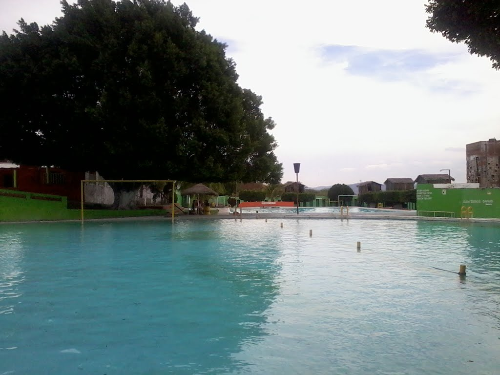
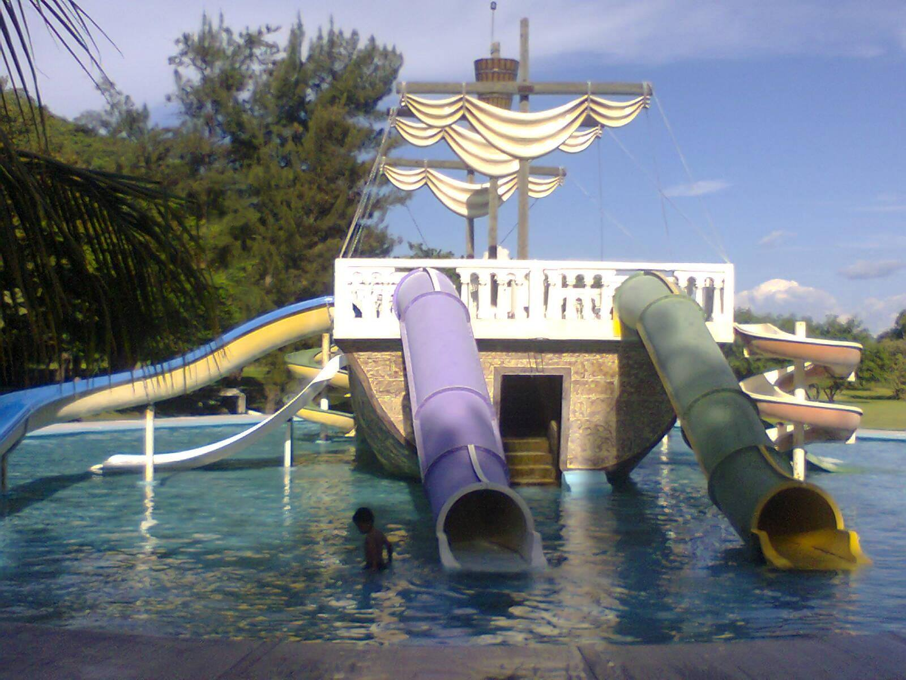

BALNEARIOS Y PARQUE ACUATICO
BALNEARIO AMATITLANES

Este es un balnerio muy antiguo que se encuentra en izucar de matamoros, en la colonia amatitlanes de hay su nombre BALNEARIO AMATITLANES.
Parque acuatico San Carlos

Ven con tu familia y amigos a disfrutar de cristalinas aguas termales de
manantial con una
temperatura constante de 36ºC
Para una cómoda estancia contamos con hospedaje en cabañas y habitaciones equipadas.
Contamos con un nuevo conjunto de habitaciones para tu descanso
En Parque Acuático San Carlos, la diversión no cuesta mas…chécate nuestras excelentes tarifas, y lo mejor de
todo…la diversión ya esta incluida, y nunca termina…!!!
Entrada general (Temporada Alta)
Adultos $ 90.00
Niños $ 60.00
Temporada alta aplica en Sábados, domingos, días festivos, Semana Santa, puentes y temporada vacacional.
Entrada general (Temporada Baja)
Adultos $ 80.00
Niños $ 60.00
EL OJO DEL CARBON

Este es un balnerio que se encuentra en tlapanala.
REGRESAR AL INICIO